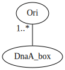
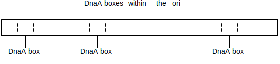

A k-mer is a subsequence of length k within some larger biological sequence (e.g. DNA or amino acid chain). For example, in the DNA sequence GAAATC, the following k-mer's exist:
| k | k-mers |
|---|---|
| 1 | G A A A T C |
| 2 | GA AA AA AT TC |
| 3 | GAA AAA AAT ATC |
| 4 | GAAA AAAT AATC |
| 5 | GAAAT AAATC |
| 6 | GAAATC |
Often times we'll need to either...
A common use-case for k-mer search is to find the replication origin (ori) of a prokaryotic organism's DNA. The replication origin is a region within a prokaryotic cell's circular DNA where DNA replication starts. Within the ori region, several smaller regions exist that contain DNA sequences known as DnaA boxes. These DnaA boxes are sequences that enzymes responsible for DNA strand replication (DNA polymerases) bind to to begin the process of replication.

Typically multiple DnaA boxes exist in the ori.

The DnaA boxes in an ori don't have to be exactly the same. The enzyme will still bind to them if they're slightly different.
Given a DNA k-mer, calculate its reverse complement.
def reverse_complement(strand: str):
ret = ''
for i in range(0, len(strand)):
base = strand[i]
if base == 'A' or base == 'a':
base = 'T'
elif base == 'T' or base == 't':
base = 'A'
elif base == 'C' or base == 'c':
base = 'G'
elif base == 'G' or base == 'g':
base = 'C'
else:
raise Exception('Unexpected base: ' + base)
ret += base
return ret[::-1]Original: TAATCCG
Reverse Complement: CGGATTA
Depending on the type of biological sequence, a k-mer may have one or more alternatives. For DNA sequences specifically, a k-mer of interest may have an alternate form. Since DNA sequences come in 2 strands, where ...
, ... the reverse complement of that k-mer may be just as valid as the original k-mer. For example, if an enzyme is known to bind to a specific DNA k-mer, it's possible that it might also bind to the reverse complement of that k-mer.
Given a k-mer, find where that k-mer occurs in some larger sequence.
def find_kmer_locations(sequence: str, kmer: str) -> List[int]:
k = len(kmer)
idxes = []
for i in range(0, len(sequence) - k):
if sequence[i:i + k] == kmer:
idxes.append(i)
return idxesFound AC in ACTGAACCTTACACTTAAAGGAGATGATGATTCAAAT at index [0, 5, 10, 12]
Imagine that you know of a specific k-mer pattern that serves some function in an organism. If you see that same k-mer pattern appearing in some other related organism, it could be a sign that that k-mer pattern serves a similar function. For example, the same k-mer pattern could be used by 2 related types of bacteria as a DnaA box.
↩PREREQUISITES↩
Given a k-mer, find where that k-mer clusters in some larger sequence.
def find_kmer_clusters(sequence: str, kmer: str, min_occurrence_in_cluster: int, cluster_window_size: int) -> List[int]:
cluster_locs = []
locs = find_kmer_locations(sequence, kmer)
start_i = 0
occurrence_count = 1
for end_i in range(1, len(locs)):
if locs[end_i] - locs[start_i] < cluster_window_size: # within a cluster window?
occurrence_count += 1
else:
if occurrence_count >= min_occurrence_in_cluster: # did the last cluster meet the min ocurr requirement?
cluster_locs.append(locs[start_i])
start_i = end_i
occurrence_count = 1
return cluster_locsFound clusters of GGG (at least 3 occurrences in window of 13) in GGGACTGAACAAACAAATTTGGGAGGGCACGGGTTAAAGGAGATGATGATTCAAAGGGT at index [20]
An enzyme may need to bind to a specific region of DNA to begin doing its job. That is, it looks for a specific k-mer pattern to bind to, where that k-mer represents the beginning of some larger DNA region that it operates on. Since DNA is known to mutate, often times you'll find multiple copies of the same k-mer pattern clustered together -- if one copy mutated to become unusable, the other copies are still around.
For example, the DnaA box in bacteria can be found repeating multiple times in the ori region.
Given a sequence, count how many times each unique k-mer in that sequence occurs.
def kmer_frequency(data: str, k: int) -> Counter[str]:
counter = Counter()
for i in range(0, len(data) - k):
pattern = data[i:i+k]
counter[pattern] += 1
return counter4-mer frequencies for AAAACAAAAAGAAAAAAT:
From past experiments, you know that a specific region of genome clusters a certain pattern. The pattern is different for each organism, but you know that it's there.
↩PREREQUISITES↩
Given a sequence, find clusters of unique k-mers within that sequence. In other words, for each unique k-mer that exists in the sequence, see if it clusters in the sequence.
An enzyme may need to bind to a specific region of DNA to begin doing its job. That is, it looks for a specific k-mer pattern to bind to, where that k-mer represents the beginning of some larger DNA region that it operates on. Since DNA is known to mutate, often times you'll find multiple copies of the same k-mer pattern clustered together -- if one copy mutated to become unusable, the other copies are still around.
For example, the DnaA box in bacteria can be found repeating multiple times in the ori region. If you don't know where the ori is, searching for clusters can give a list of potential locations.